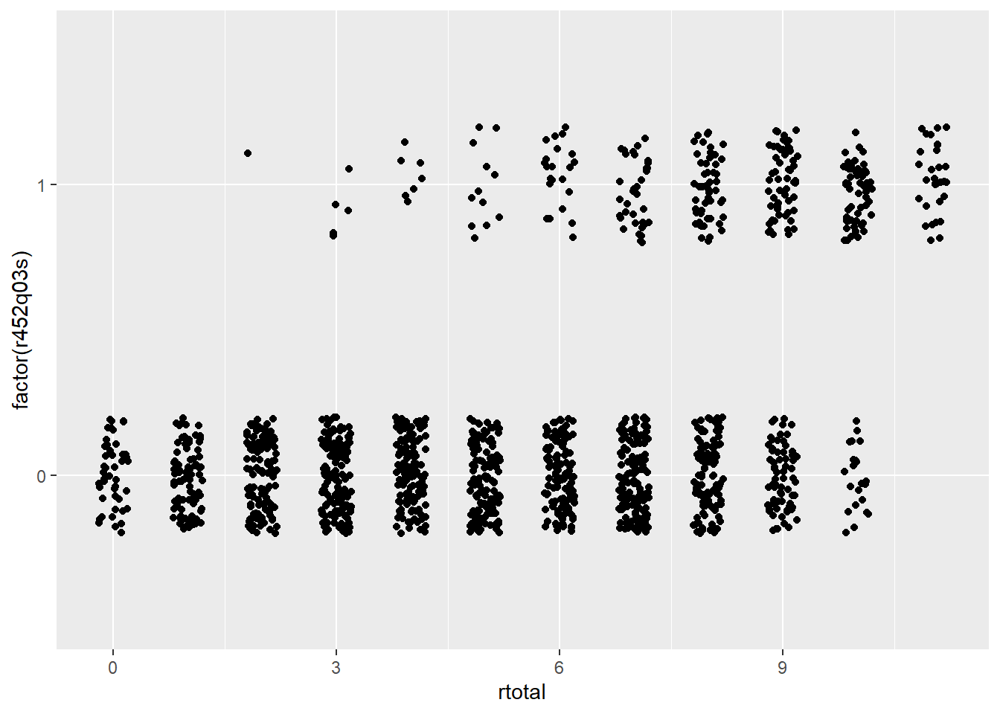
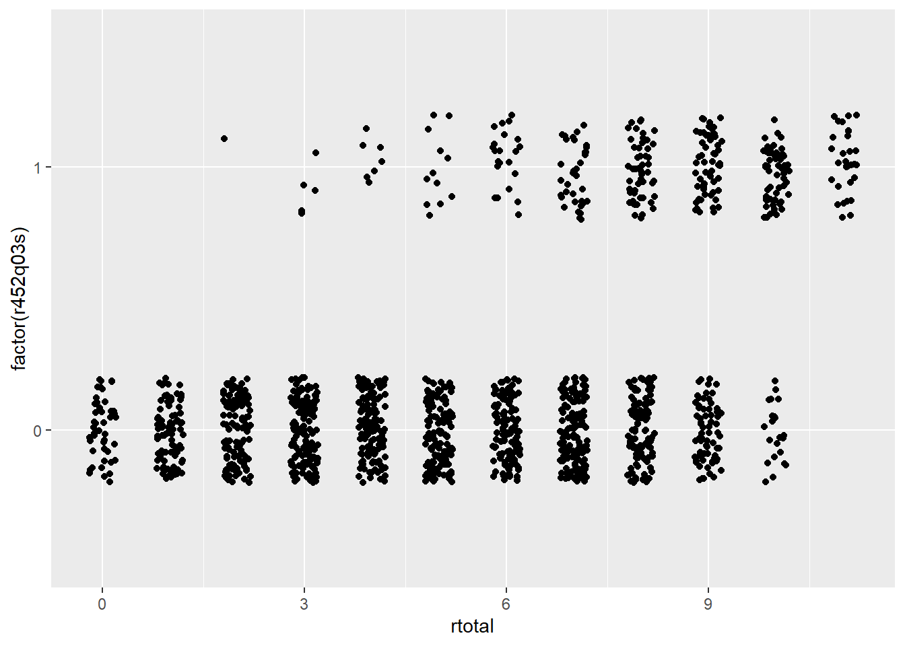

22 Traditional item statistics
Three statistics are commonly used to evaluate the items within a scale or test. These are item difficulty, discrimination, and alpha-if-item-deleted. Each is presented below with examples based on PISA09.
22.1 Item difficulty
Once we have established scoring schemes for each item in our test, and we have applied them to item-response data from a sample of individuals, we can utilize some basic descriptive statistics to examine item-level performance. The first statistic is item difficulty, or, how easy or difficult each item is for our sample. In cognitive testing, we talk about easiness and difficulty, where test takers can get an item correct to different degrees, depending on their ability or achievement. In noncognitive testing, we talk instead about endorsement or likelihood of choosing the keyed response on the item, where test takers are more or less likely to endorse an item, depending on their level on the trait. In the discussions that follow, ability and trait can be used interchangeably, as can correct/incorrect and keyed/unkeyed response, and difficulty and endorsement. See Table 22.1 for a summary of these terms.
| General Term | Cognitive | Noncognitive |
|---|---|---|
| Construct | Ability | Trait |
| Levels on construct | Correct and incorrect | Keyed and unkeyed |
| Item performance | Difficulty | Endorsement |
In CTT, the item difficulty is simply the mean score for an item. For dichotomous 0/1 items, this mean is referred to as a \(p\)-value, since it represents the proportion of examinees getting the item correct or choosing the keyed response. With polytomous items, the mean is simply the average score. When testing noncognitive traits, the term \(p\)-value may still be used. However, instead of item difficulty we refer to endorsement of the item, with proportion correct instead becoming proportion endorsed.
Looking ahead to IRT, item difficulty will be estimated as the predicted mean ability required to have a 50% chance of getting the item correct or endorsing the item.
Here, we calculate \(p\)-values for the scored reading items, by item type. Item PISA09$r452q03, a CR item, stands out from the rest as having a very low \(p\)-value of 0.13. This tells us that only 13% of students who took this item got it right. The next lowest \(p\)-value was 0.37.
# Get p-values for reading items by type
round(colMeans(PISA09[, crsitems], na.rm = T), 2)
#> r414q06s r452q03s r452q06s r458q07s
#> 0.55 0.13 0.51 0.57
round(colMeans(PISA09[, srsitems], na.rm = T), 2)
#> r414q02s r414q11s r414q09s r452q04s r452q07s r458q01s r458q04s
#> 0.49 0.37 0.65 0.65 0.48 0.56 0.59For item r452q03, students read a short description of a scene from The Play’s the Thing, shown in Appendix ??. The question then is, “What were the characters in the play doing just before the curtain went up?” This question is difficult, in part, because the word “curtain” is not used in the scene. So, the test taker must infer that the phrase “curtain went up” refers to the start of a play. The question is also difficult because the actors in this play are themselves pretending to be in a play. For additional details on the item and the rubric used in scoring, see Appendix ??.
Although difficult questions may be frustrating for students, sometimes they’re necessary. Difficult or easy items, or items that are difficult or easy to endorse, may be required given the purpose of the test. Recall that the purpose of a test describes: the construct, what we’re measuring; the population, with whom the construct is being measured; and the application or intended use of scores. Some test purposes can only be met by including some very difficult or very easy items. PISA, for example, is intended to measure students along a continuum of reading ability. Without difficult questions, more able students would not be measured as accurately. On the other hand, a test may be intended to measure lower level reading skills, which many students have already mastered. In this case, items with high \(p\)-values would be expected. Without them, low ability students, who are integral to the test purpose, would not be able to answer any items correctly.
This same argument applies to noncognitive testing. To measure the full range of a clinical disorder, personality trait, or attitude, we need items that can be endorsed by individuals all along the continuum for our construct. Consider again the attitude toward school scale. All four items have mean scores above 2. On average, students agree with these attitude items, after reverse coding the first two, more often than not. If we rescore scores to be dichotomous, with disagreement as 0 and agreement as 1, we can get \(p\)-values for each item as well. These \(p\)-values are interpreted as agreement rates. They tell us that at least 70% of students agreed with each attitude statement.
# Index for attitude toward school items, with the first
# two items rescored
atsitems <- c("st33q01r", "st33q02r", "st33q03",
"st33q04")
# Check mean scores
round(colMeans(PISA09[, atsitems], na.rm = T), 2)
#> st33q01r st33q02r st33q03 st33q04
#> 3.04 3.38 2.88 3.26
# Convert polytomous to dichotomous, with any disagreement
# coded as 0 and any agreement coded as 1
ats <- apply(PISA09[, atsitems], 2, rescore,
list("0" = 1:2, "1" = 3:4))
round(colMeans(ats, na.rm = T), 2)
#> st33q01r st33q02r st33q03 st33q04
#> 0.78 0.92 0.77 0.89Given their high means and \(p\)-values, we might conclude that these items are not adequately measuring students with negative attitudes toward school, assuming such students exist. Perhaps if an item were worded differently or were written to ask about another aspect of schooling, such as the value of homework, more negative attitudes would emerge. On the other hand, it could be that students participating in PISA really do have overall positive attitudes toward school, and regardless of the question they will tend to have high scores.
This brings us to one of the major limitations of CTT item analysis: the item statistics we compute are dependent on our sample of test takers. For example, we assume a low \(p\)-value indicates the item was difficult, but it may have simply been difficult for individuals in our sample. What if our sample happens to be lower on the construct than the broader population? Then, the items would tend to have lower means and \(p\)-values. If administered to a sample higher on the construct, item means would be expected to increase. Thus, the difficulty of an item is dependent on the ability of the individuals taking it.
Because we estimate item difficulty and other item analysis statistics without accounting for the ability or trait levels of individuals in our sample, we can never be sure of how sample-dependent our results really are. This sample dependence in CTT will be addressed in IRT.
22.2 Item discrimination
Whereas item difficulty tell us the mean level of performance on an item, across everyone taking the item, item discrimination tells us how item difficulty changes for individuals of different abilities. Discrimination extends item difficulty by describing mean item performance in relation to individuals’ levels of the construct. Highly discriminating cognitive items are easier for high ability students, but more difficult for low ability students. Highly discriminating noncognitive items are endorsed less frequently by test takers low on the trait, but more frequently by test takers high on the trait. In either case, a discriminating item is able to identify levels on the construct of interest, because scores on the item itself are positively related to the construct.
Item discrimination is measured by comparing performance on an item for different groups of people, where groups are defined based on some measure of the construct. In the early days of item analysis, these groups were simply defined as “high” and “low” using a cutoff on the construct to distinguish the two. If we knew the true abilities for a group of test takers, and we split them into two ability groups, we could calculate and compare \(p\)-values for a given item for each group. If an item were highly discriminating, we would expect it to have a higher \(p\)-value in the high ability group than in the low ability group. We would expect the discrepancy in \(p\)-values to be large. On the other hand, for an item that doesn’t discriminate well, the discrepancy between \(p\)-values would be small.
# Get total reading scores and check descriptives
PISA09$rtotal <- rowSums(PISA09[, rsitems])
dstudy(PISA09$rtotal)
#>
#> Descriptive Study
#>
#> mean median sd skew kurt min max n na
#> x 5.57 6 2.86 -0.106 2 0 11 43628 0
# Compare CR item p-values for students below vs above the
# median total score
round(colMeans(PISA09[PISA09$rtotal <= 6, crsitems],
na.rm = T), 2)
#> r414q06s r452q03s r452q06s r458q07s
#> 0.32 0.03 0.28 0.39
round(colMeans(PISA09[PISA09$rtotal > 6, crsitems],
na.rm = T), 2)
#> r414q06s r452q03s r452q06s r458q07s
#> 0.87 0.27 0.84 0.83Although calculating \(p\)-values for different groups of individuals is still a useful approach to examining item discrimination, we lose information when we reduce scores on our construct to categories such as “high” and “low.” Item discrimination is more often estimated using the correlation between item responses and construct scores. In the absence of scores on the construct, total scores are typically used as a proxy. The resulting correlation is referred to as an item-total correlation (ITC). When responses on the item are dichotomously scored, it is also sometimes called a point-biserial correlation.
Here, we take a subset of PISA09 including CR item scores and the total reading score for German students. The correlation matrix for these five variables shows how scores on the items relate to one another, and to the total score. Relationships between items and the total are ITC estimates of item discrimination. The first item, with ITC of 0.7, is best able to discriminate between students of high and low ability.
# Create subset of data for German students, then reduce
# to complete data
pisadeu <- PISA09[PISA09$cnt == "DEU", c(crsitems,
"rtotal")]
pisadeu <- pisadeu[complete.cases(pisadeu), ]
round(cor(pisadeu), 2)
#> r414q06s r452q03s r452q06s r458q07s rtotal
#> r414q06s 1.00 0.27 0.42 0.39 0.70
#> r452q03s 0.27 1.00 0.31 0.19 0.49
#> r452q06s 0.42 0.31 1.00 0.31 0.65
#> r458q07s 0.39 0.19 0.31 1.00 0.56
#> rtotal 0.70 0.49 0.65 0.56 1.00Note that when you correlate something with itself, the result should be a correlation of 1. When you correlate a component score, like an item, with a composite that includes that component, the correlation will increase simply because of the component in on both sides of the relationship. Correlations between item responses and total scores can be “corrected” for this spurious increase simply by excluding a given item when calculating the total. The result is referred to as a corrected item-total correlation (CITC). ITC and CITC are typically positively related with one another, and give relatively similar results. However, CITC is preferred, as it is considered more a conservative and more accurate estimate of discrimination.
Figure 22.1 contains scatter plots for two CR reading items from PISA09, items r414q06s and r452q03s. On the x-axis in each plot are total scores across all reading items, and on the y-axis are the scored item responses for each item. These plots help us visualize both item difficulty and discrimination. Difficulty is the amount of data horizontally aligned with 0, compared to 1, on the y-axis. More data points at 0 indicate more students getting the item wrong. Discrimination is then the bunching of data points at the low end of the x-axis for 0, and at the high end for 1.
# Scatter plots for visualizing item discrimination
ggplot(pisadeu, aes(rtotal, factor(r414q06s))) +
geom_point(position = position_jitter(w = 0.2, h = 0.2))
ggplot(pisadeu, aes(rtotal, factor(r452q03s))) +
geom_point(position = position_jitter(w = 0.2, h = 0.2)) 

Figure 22.1: Scatter plots showing the relationship between total scores on the x-axis with dichotomous item response on two PISA items on the y-axis.
Suppose you had to guess a student’s reading ability based only on their score from a single item. Which of the two items shown in Figure 22.1 would best support your guess? Here’s a hint: it’s not item r452q03. Notice how students who got item r452q03 wrong have rtotal scores that span almost the entire score scale? People with nearly perfect scores still got this item wrong. On the other hand, item r414q06 shows a faster tapering off of students getting the item wrong as total scores increase, with a larger bunching of students of high ability scoring correct on the item. So, item r414q06, has a higher discrimination, and gives us more information about the construct than item r452q03.
Next, we calculate the ITC and CITC “by hand” for the first attitude toward school item, which was reverse coded as st33q01r. There is a sizable difference between the ITC and the CITC for this item, likely because the scale is so short to begin with. By removing the item from the total score, we reduce our scale length by 25%, and, presumably, our total score becomes that much less representative of the construct. Discrimination for the remaining attitude items will be examined later.
# Caculate ITC and CITC by hand for one of the attitude
# toward school items
PISA09$atstotal <- rowSums(PISA09[, atsitems])
cor(PISA09$atstotal, PISA09$st33q01r, use = "c")
#> [1] 0.733
cor(PISA09$atstotal - PISA09$st33q01r,
PISA09$st33q01r, use = "c")
#> [1] 0.466Although there are no clear guidelines on acceptable or ideal levels of discrimination, 0.30 is sometimes used as a minimum. This minimum can decrease to 0.20 or 0.15 in lower-stakes settings where other constructs like motivation are expected to impact the quality of our data. Typically, the higher the discrimination, the better. However, when correlations between item scores and construct scores exceed 0.90 and approach 1.00, we should question how distinct our item really is from the construct. Items that correlate too strongly with the construct could be considered redundant and unnecessary.
22.3 Internal consistency
The last item analysis statistic we’ll consider here indexes how individual items impact the overall internal consistency reliability of the scale. Internal consistency is estimated via coefficient alpha, introduced in Module 30.3. Alpha tells us how well our items work together as a set. “Working together” refers to how consistently the item responses change, overall, in similar ways. A high coefficient alpha tells us that people tend to respond in similar ways from one item to the next. If coefficient alpha were perfectly 1.00, we would know that each person responded in exactly the same rank-ordered way across all items. An item’s contribution to internal consistency is measured by estimating alpha with that item removed from the set. The result is a statistic called alpha-if-item-deleted (AID).
AID answers the question, what happens to the internal consistency of a set of items with a given item is removed from the set? Because it involves the removal of an item, higher AID indicates a potential increase in internal consistency when an item is removed. Thus, when it is retained, the item is actually detracting from the internal consistency of the scale. Items that detract from the internal consistency should be considered for removal.
To clarify, it is bad news for an item if the AID is higher than the overall alpha for the full scale. It is good news for an item if AID is lower than alpha for the scale.
The istudy() function in the epmr package estimates AID, along with the other item statistics presented so far. AID is shown in the last column of the output. For the PISA09 reading items, the overall alpha is 0.76, which is an acceptable level of internal consistency for a low-stakes measure like this (see Table 7.1). The AID results then tell us that alpha never increases beyond its original level after removing individual items, so, good news. Instead, alpha decreases to different degrees when items are removed. The lowest AID is 0.725 for item r414q06. Removal of this item results in the largest decrease in internal consistency.
# Estimate item analysis statistics, including alpha if
# item deleted
istudy(PISA09[, rsitems])
#>
#> Scored Item Study
#>
#> Alpha: 0.76
#>
#> Item statistics:
#> m sd n na itc citc aid
#> r414q02s 0.494 0.500 43958 920 0.551 0.411 0.742
#> r414q11s 0.375 0.484 43821 1057 0.455 0.306 0.755
#> r414q06s 0.547 0.498 43733 1145 0.652 0.533 0.725
#> r414q09s 0.653 0.476 43628 1250 0.518 0.380 0.745
#> r452q03s 0.128 0.334 44303 575 0.406 0.303 0.753
#> r452q04s 0.647 0.478 44098 780 0.547 0.413 0.741
#> r452q06s 0.509 0.500 44064 814 0.637 0.515 0.728
#> r452q07s 0.482 0.500 43979 899 0.590 0.458 0.735
#> r458q01s 0.556 0.497 44609 269 0.505 0.360 0.748
#> r458q07s 0.570 0.495 44542 336 0.553 0.416 0.741
#> r458q04s 0.590 0.492 44512 366 0.522 0.381 0.745Note that discrimination and AID are typically positively related with one another. Discriminating items tend also to contribute to internal consistency. However, these two item statistics technically measure different things, and they need not correspond to one another. Thus, both should be considered when evaluating items in practice.
22.4 Item analysis applications
Now that we’ve covered the three major item analysis statistics, difficulty, discrimination, and contribution to internal consistency, we need to examine how they’re used together to build a set of items. All of the scales in PISA09 have already gone through extensive piloting and item analysis, so we’ll work with a hypothetical scenario to make things more interesting.
Suppose we needed to identify a brief but effective subset of PISA09 reading items for students in Hong Kong. The items will be used in a low-stakes setting where practical constraints limit us to only eight items, so long as those eight items maintain an internal consistency reliability at or above 0.60. First, let’s use the Spearman-Brown formula to predict how low reliability would be expected to drop if we reduced our test length from eleven to eight items.
# Subset of data for Hong Kong, scored reading items
pisahkg <- PISA09[PISA09$cnt == "HKG", rsitems]
pisahkg_alpha=epmr::coef_alpha(pisahkg)$alpha
# Spearman-Brown based on original alpha and new test
# length of 8 items
sb_r(r =pisahkg_alpha, k = 8/11)
#> [1] 0.605Our new reliability is estimated to be 0.605, which, thankfully, meets our hypothetical requirements. Now, we can explore our item statistics to find items for removal. The item analysis results for the full set of eleven items show two items with CITC below 0.20. These are items r414q11 and r452q03. These items also have AID above alpha for the full set, indicating that both are detracting from the internal consistency of the measure, though only to a small degree. Finally, notice that these are also the most difficult items in the set, with means of 0.36 and 0.04 respectively. Only 4% of students in Hong Kong got item r452q03 right.
# Item analysis for Hong Kong
istudy(pisahkg)
#>
#> Scored Item Study
#>
#> Alpha: 0.678
#>
#> Item statistics:
#> m sd n na itc citc aid
#> r414q02s 0.5109 0.500 1474 10 0.496 0.322 0.658
#> r414q11s 0.3553 0.479 1469 15 0.349 0.165 0.685
#> r414q06s 0.6667 0.472 1467 17 0.596 0.452 0.634
#> r414q09s 0.7019 0.458 1466 18 0.439 0.273 0.666
#> r452q03s 0.0405 0.197 1481 3 0.233 0.156 0.679
#> r452q04s 0.6295 0.483 1479 5 0.541 0.382 0.646
#> r452q06s 0.6303 0.483 1477 7 0.586 0.435 0.637
#> r452q07s 0.4830 0.500 1474 10 0.510 0.338 0.654
#> r458q01s 0.5037 0.500 1481 3 0.481 0.305 0.660
#> r458q07s 0.5922 0.492 1481 3 0.515 0.349 0.652
#> r458q04s 0.6914 0.462 1481 3 0.538 0.386 0.646Let’s remove these two lower-quality items and check the new results. The means and SD should stay the same for this new item analysis. However, the remaining statistics, ITC, CITC, and AID, all depend on the full set, so we would expect them to change. The results indicate that all of our AID are below alpha for the full set of nine items. The CITC are acceptable for a low-stakes test. However, item item r414q09 has the weakest discrimination, making it the best candidate for removal, all else equal.
# Item analysis for a subset of items
istudy(pisahkg[, rsitems[-c(2, 5)]])
#>
#> Scored Item Study
#>
#> Alpha: 0.687
#>
#> Item statistics:
#> m sd n na itc citc aid
#> r414q02s 0.511 0.500 1474 10 0.506 0.320 0.670
#> r414q06s 0.667 0.472 1467 17 0.605 0.451 0.643
#> r414q09s 0.702 0.458 1466 18 0.454 0.277 0.678
#> r452q04s 0.629 0.483 1479 5 0.542 0.370 0.659
#> r452q06s 0.630 0.483 1477 7 0.601 0.442 0.645
#> r452q07s 0.483 0.500 1474 10 0.514 0.330 0.668
#> r458q01s 0.504 0.500 1481 3 0.500 0.314 0.671
#> r458q07s 0.592 0.492 1481 3 0.537 0.361 0.661
#> r458q04s 0.691 0.462 1481 3 0.550 0.388 0.656Note that the reading items included in PISA09 were not developed to function as a reading scale. Instead, these are merely a sample of items from the study, the items with content that was made publicly available. Also, in practice, an item analysis will typically involve other considerations besides the statistics we are covering here, most importantly, content coverage. Before removing an item from a set, we should consider how the test outline will be impacted, and whether or not the balance of content is still appropriate.